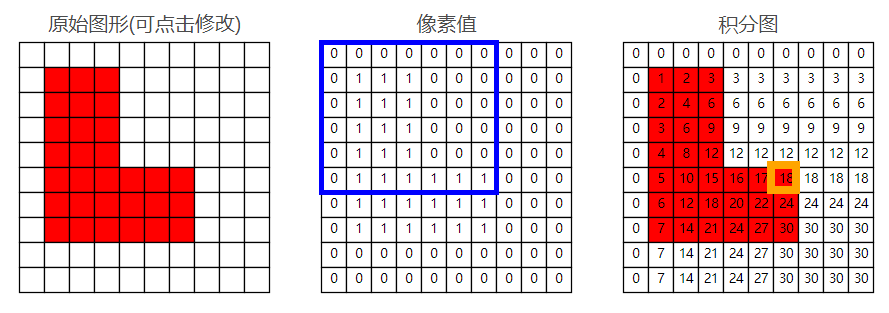
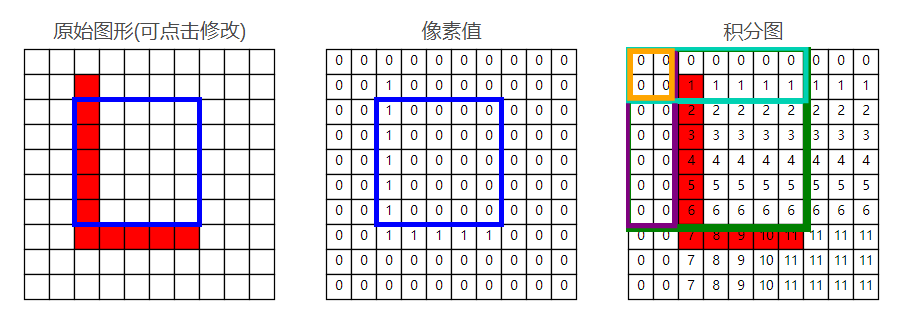
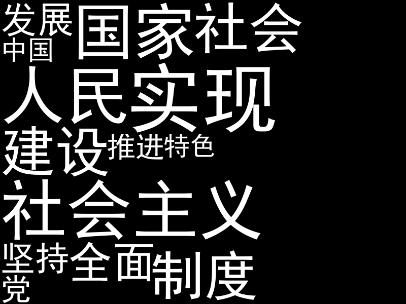
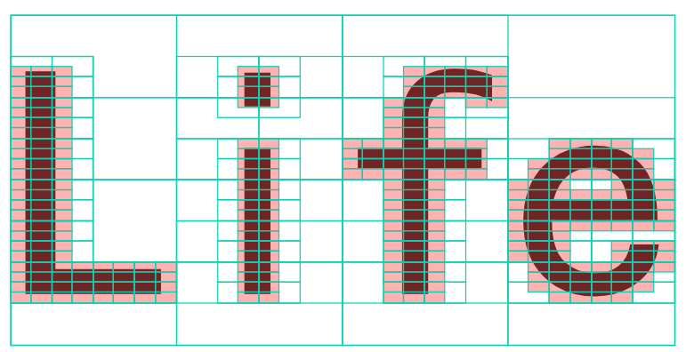
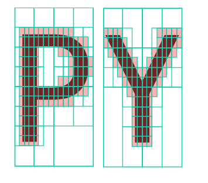
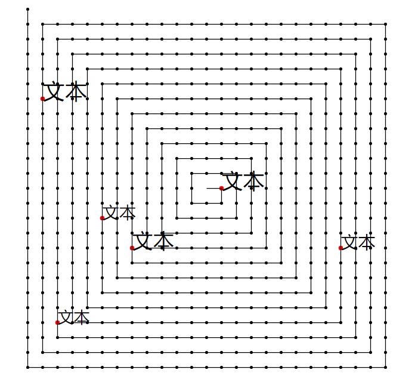

学习python123 https://python123.io/tutorials/word_cloud
PART 1
- 当我看到词云时，我在想什么？
- 关键问题在哪？
- 笨办法
- 动手做？
- Wordcloud 探秘
- 初窥图像处理一角
- 快速重叠检测
- 词云布局方法
- 着手实现
- 明显的缺点
- 更好的策略
PART 2 - 四叉树
- 四叉树重叠检测
- 矩形螺旋布局
- 新的实现
- 性能瓶颈
- 优化！优化！
- 为什么要实现一个新的词云？
- 更多字体
- 更多颜色
- 更多布局方法
- 表情包云？
- 你能做的更好！
当我看到词云时，我在想什么？
当第一眼看到词云时，基于程序员的条件反射，一个大大的「How」字浮现在眼前：它是如何实现的？仔细观察，又发现一些现象。词语之间没有重叠，词语中间的空隙被更小的词语填满，有的词语与词语之间以奇怪的姿势交错在一起。考虑了一会儿，我知道我又一次进入了未知领域，以我所知的方法，似乎没有一个能够轻易解决这个问题。
关键问题在哪？
首先，在图片上绘制文字肯定不是难事，虽然我没用 python 画过任何图像，但如果这件事成为难点，那肯定是 python 生态出了问题。同样的，设置文字为不同颜色或不同大小也应该不是难事。文字的位置、颜色、大小看起来都比较随机，这也很简单，random 库就能实现。那最后就剩下一个问题，要如何做到词语之间紧密排布但又没有重叠呢？
笨办法
假设先在一张白色的图片 A 上放一个黑色的词语 A，又在另一张同样大小的白色的图片 B 上放一个词语 B，把这两张图片都打印到纸上，整齐的叠在一起，对着阳光看，不就能知道这两个词语有没有重叠了吗？如果重叠，就把词语 B 换一个地方，重新打印对比；不重叠时，记下这个位置，词语 B 打印到图片 A 上……
似乎不太困难，而且我知道我并不需要把图片打印出来，可以让 python 帮我完成对比的工作。
图片是由一个一个像素组成的，比如一张 800 × 600 的图片，说明它是由 800 × 600 = 48万 个像素组成。每个像素中保存了一个颜色值，通过对比图片 A 和 B 的每一个像素，如果相同位置上，A 和 B 的像素都为黑色，那就意味这两个词语有重叠。
虽然还有一些不清楚的地方，不过这确实是一个可行的方案。
动手做？
要开始用 python 动手实现了吗？
当然不，我们知道 python 有一个 wordcloud 库可以生成词云。
那要开始介绍 wordcloud 库吗？
是也不是。我更关心的是 wordcloud 库如何解决我们的关键问题？
#Wordcloud 探秘
从 Github 上可以轻易的下载到 wordcloud 库的代码。从入口函数开始，粗略的追踪了几个函数的调用，有几个地方引起了我的注意：
- 它使用了 Pillow 库，搜索发现这是一个 python 图像处理库。
- 它在一个 for word, freq in frequencies 循环中，将单词逐个放到图片上。
- 这个循环中，除了对字体进行设置外，还调用了一个 sample_position 方法来寻找放置的位置。<- 这就是我们所要的
- sample_position 很简单，它的实现在 query_integral_image.pyx 文件中，仅有 30 多行，它从图片左上角第一个像素开始，遍历所有像素，检查各个位置能否放置。另外，integral_image 翻译为 积分图。
初窥图像处理一角
积分图？听起来似乎很复杂，但理解起来却特别简单。首先，积分图不是一张真实的图片，接下来……看图吧：

积分图中，每个单元的值，等于原图此位置左上角所有像素值之和（橙框的值 = 蓝框中所有值之和）。这个性质，能够帮助我们快速判断一个区域内有没有内容。为什么这么说呢？
快速重叠检测
如果一个矩形区域内没有内容，说明这个区域内所有像素值之和为零。根据积分图的特征，我们可以进行如下计算：用大矩形所有像素值之和，减去上方和左侧两个矩形像素值之和，再加上左上角小矩形像素值之和，就得到了所求区域内像素值之和。

大矩形（绿色）: 6
左侧矩形（紫色）: 0
上方矩形（青色）: 1
左上矩形（橙色）: 0
目标矩形（蓝色）: 6 - 0 - 1 + 0 = 5
这样，只需要进行 四次取值和一次运算 就能够判断某区域是否为空，比逐个像素检测快很多。
每个词语都能够被框在一个矩形中（宽度为 w，高度为 h），我们只需要对图片每个位置 (x,y) 进行计算，如果 (x,y) 到 (x + w - 1, y + h - 1) 这个矩形区域内没有内容，就能够放置这个词语。
至此，我们知道了词云的第一个关键点：重叠检测方法。
词云布局方法
我们已经能够判断新放置的词语是否和其它词语重叠，接下来的问题就是选择一种策略来放置新词语。
wordcloud 库使用了一个非常简单的布局方法：
- 从左上角第一个像素开始，判断在这个位置放置新词语会不会与已放置的内容重叠；
- 如果不重叠，将这个位置添加一个列表 list 中；
- 遍历图片所有像素，将所有可放置的位置都加到 list 中；
- 从 list 中随机选择一个位置放置这个词语。
这样的方法推翻了我们之前的观测，wordcloud 并没有做任何工作来保证词语之间紧密排布。但这并不困难，只要我们换一种方法：
- 选择一个初始位置 P；
- 对每一个单词，从位置 P 开始，稍微移动一点点距离，看能不能放下，如果不能，再稍微移动一点距离，直到能够放下。
不错，就是简单的贪心策略。
着手实现
1 | import random |
关键的确定位置方法：1
2
3
4
5
6
7
8
9
10
11
12
13
14
15import numpy as np
def find_position(img, size_x, size_y):
# 计算积分图，cumsum([1,2,3,4]) => [1,3,6,10]
integral = np.cumsum(np.cumsum(np.asarray(img), axis=1), axis=0)
# 使用 wordcloud 的布局策略
for x in range(1, 800 - size_x):
for y in range(1, 600 - size_y):
# 检测矩形区域内容是否为空
area = integral[y - 1, x - 1] + integral[y + size_y - 1, x + size_x - 1]
area -= integral[y - 1, x + size_x - 1] + integral[y + size_y - 1, x - 1]
if not area:
return x, y
return None, None
至此，我们已经理解 wordcloud 生成词云的基本原理。

明显的缺点
当词语数量增多时，运行代码，久久未能得出结果。我意识到生成词云是一个需要极大计算量的工作。
wordcloud 使用了很多使代码变得难以理解的优化策略，并且将 find_position 函数转用 Cython 实现（转换为 C 语言）也在很大程度上说明了这个问题。
速度问题暂且不提，毕竟生成词云不是我的日常工作。但是通过实现上面的算法，我还发现另一个问题：矩形检测的积分图算法似乎不能很好的支持文字的旋转。
这件事很好理解，如果将一个单词旋转一定角度，那么它的外接矩形面积必然会比不旋转时候大，这就需要更大的矩形区域来放置这个词语，导致很多实际可以放置的位置却不能放置。
那么，有没有更好的策略呢？
更好的策略
答案是肯定的，包含旋转文字的词云图片并不鲜见。经过一段时间的调查，我们发现，在其它一些语言实现的词云中，使用了不一样的实现方式。
四叉树
在 Wordcloud 算法中，每放置完一个词语，就需要重新计算一次积分图，下一个词语需要与整张图片进行重叠检测。有没有可能将每个词视为单独的实体，在放置新词时，检测它与其它每一个词语有没有重叠？
在 Jonathan Feinberg 的书中，介绍了一种叫做 层次边界框（Hierarchical bounding boxes）的方法来快速实现两个词语间的重叠检测。
层次边界框这个词太拗口，我们换用「四叉树」来代指这种结构，它本质上也是一棵记录空间信息的四叉树。
四叉树的构建并不困难，将图片横纵各切一刀，平均分割为「左上、左下、右上、右下」四个区域，如果某个区域中有内容（此时可以用积分图算法判断），那么继续将这个区域分割为四个部分，直到区域的大小小于某个值。

四叉树每深一层，对形状的描述就越精确，每一次分隔，都能排除一些空白矩形区域，剩下的有像素的区域，都记录到了树中。
1 | class QuadTree: |
四叉树重叠检测
那么，如何使用四叉树检测单词是否重叠呢？
首先，通过搜索我们知道，检测两个矩形是否重叠非常容易，只要知道两个矩形的坐标，通过简单的公式就可以计算。
对于两个单词，首先可以构建两棵四叉树。判断四叉树第一层的矩形是否有重叠，如果没有，说明两个单词不可能重叠；如果有，说明两个单词可能重叠，继续检测下一层中记录的区域。

最终，要确定两个单词重叠，需要判断两个四叉树的各叶子结点中，至少有两个重叠。当然，直接进行叶子结点的遍历也是可行的，但逐层判断能省掉大量时间。
1 | # (x1,y1) 为 tree 对应单词放置位置，(x2,y2) 为 otherTree 对应单词放置位置 |
矩形螺旋布局
除了使用新的重叠检测算法，我们还打算引入一个新的布局方法来使最终的词云更好看。

矩形螺旋布局也是一种贪心布局策略，所有的单词紧密放置在图中心的螺旋形状上。每个单词都从螺旋的中心位置开始检测，如果不能放置，就移动到螺旋的下一个位置。
1 | # 参数为图像的大小 |
新的实现
性能瓶颈
词云的生成速度比积分图算法稍快，但仍然需耐心等待。
因为每个单词都需要与其它所有单词进行重叠检测，导致 N2 的时间复杂度，单词数量增多时性能会急剧下降。
由于图像中心文字密集，需要检测大量无效位置后才能确定放置地点（通常只能放在图像的外侧边缘）。
优化！优化！
为了使词云运行速度达到可以接受的程度，我们使用两种简单策略来优化词云算法。
一种策略的想法来源于四叉树。先把图像分割为多个矩形区域，比如 800×600 的图片，分割为 48（8×6）个区域，每个区域长宽都是 100 像素。布局每个单词后，就将这个单词添加到对应的区域中，这样在布局一个新的单词时，只要根据单词大概的大小和放置的位置，在有限的几个区域中进行重叠检测，大幅降低了需要进行重叠检测的次数。
第二种策略更多来源于经验。假如要放置数十个大小差不多的单词，第一个单词检测了螺旋上的 200 个坐标后，找到一个放置位置，那么下一个单词就跳过这 200 个坐标（因为大概率重叠），在第 300 个坐标上放置，下一个单词从第 300 个坐标开始……如果检测到了图片边界未找到可以放置的坐标，那么回到初始位置重新寻找。
为什么要实现一个新的词云？
为了更多的可能性。
更多字体
作为前端开发者，我们经常使用 fontawesome 图标字体，那么用它来制作词云如何？
更多颜色
词云库多数都使用随机颜色，但是懂得了实现原理，颜色可以更有意义：
- 按词频设置单词颜色。
- 读取另一张色彩丰富的图片作为颜色映射。
- 对不同区域使用不用颜色。
更多布局方法
在网络上的词云图中，我们经常见到把所有词语放置在一定区域内的图片。
要实现起来也很简单，事先制作一张黑白图片作为遮罩，当作单词计算四叉树后，放到图片中即可。单词除了与其它单词进行重叠检测外，也与遮罩进行重叠检测。
使用多个遮罩也不是难事，甚至可以使用代码绘制遮罩。
除此之外，你还可以：
- 让词语都平行或斜向排布。
- 固定一些词语的大小、位置和颜色，让重点更加突出。
表情包云？
聪明的你已经意识到，词云中的每个单词其实都是当作图片处理的，那么，是不是可以用词云算法来布局图片呢，比如表情包？
1 | # -*- coding: utf-8 -*- |